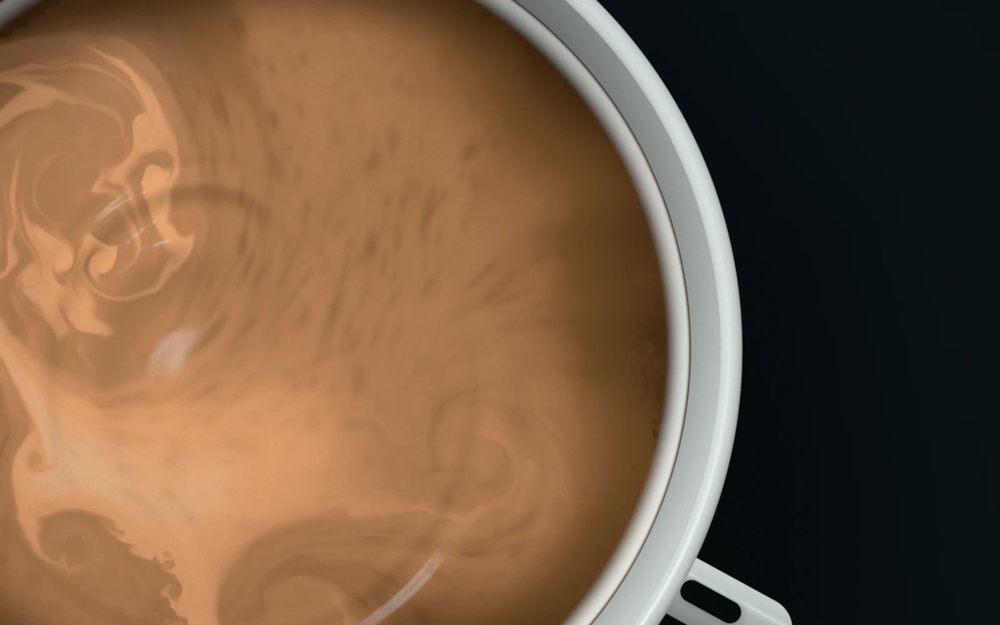
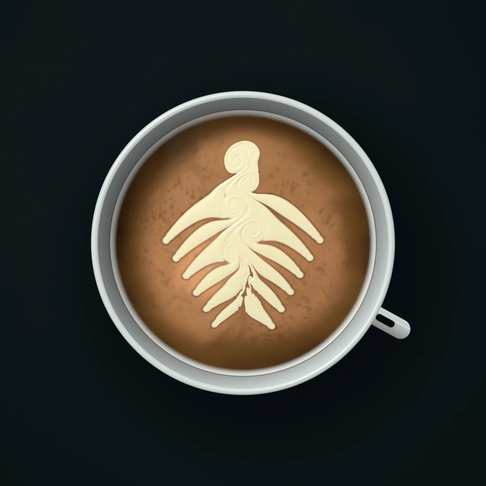
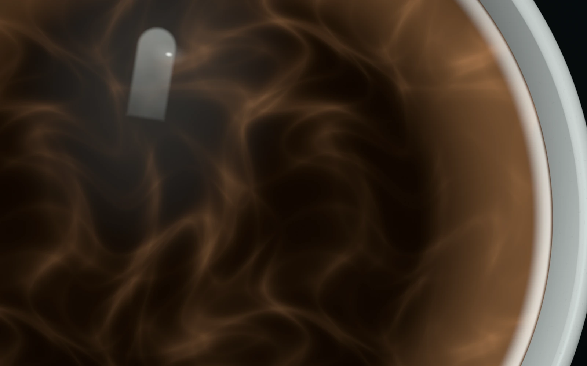

Tide
water
Two small-lot coffees every month, roasted in one 18 kg batch and shipped within 48 hours, with notes on who grew them.
Choose your first bagMove to stir the cup. Click to pour milk.Touch and hold to stir. Tap to pour milk.

RoastedMonday and shipped byWednesday
October’s two lots go into the roaster on Monday 12 October as batch 041, 18 kg in all.
By Wednesday 14 October they leave in resealable valve bags that fit through your letterbox, each with notes on the farm and a recipe.

ColombiaHuila
Red apple, panela, cocoa nib.
- Variety
- Caturra
- Process
- Honey
- Altitude
- 1,750 m
- Roast
- Medium-light
Grown on a family farm that dries its coffee slowly on raised beds under shade cloth, for about two weeks.

KenyaKiambu
Blackcurrant, grapefruit, cane sugar.
- Varieties
- SL28 and SL34
- Process
- Washed
- Altitude
- 1,800 m
- Roast
- Light
Grown by smallholder families who deliver ripe cherries to a cooperative washing station in the hills north of Nairobi.